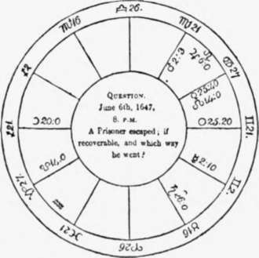

What Is Astrology?
Description
This section is from the book "Faith - Healing. Christian Science And Kindred Phenomena", by James Monroe Buckley. Also available from Amazon: Faith-Healing, Christian Science and Kindred Phenomena.
What Is Astrology?
According to Zadkiel's " Grammar of Astrology " the science consists of four branches or distinct parts, which are essentially different from each other. These are: Nativities, Mundane Astrology, Atmospheric Astrology, and Horary Astrology.
Nativities comprise " the art of foreseeing, from the figurings of the heavens at the moment of birth, the future fate and character of individuals".
Mundane Astrology
Mundane Astrology is " the art of foreseeing, by the positions of the heavenly bodies at certain periods, the circumstances of nations, such as wars, pestilences, inundations, earthquakes, etc".
Atmospheric Astrology
Atmospheric Astrology, Zadkiel defines as " the art of foreseeing, by the positions of the planets at the periods of the sun and moon being in mutual aspect, and some other circumstances, the quality of the weather at any required time or place".
Horary Astrology
Horary Astrology is " the art of foreseeing, by the positions of the heavens at any period when an individual may be anxious about the matter, the result of any business or circumstance whatever".
Concerning Atmospheric Astrology, which is merely a system of meteorology based on the theory that changes of the weather arc produced by the influence of the planets, I shall say nothing. Mundane Astrology is in some respects more complex than either Nativities or Horary Astrology.
The nature of the influence of the heavens upon human destiny has been differently represented by different astrologers, some claiming that the heavens merely exhibit signs of events, so that when these are properly interpreted the future can be foretold, and others holding that they are causes of the events. Most, however, seem to believe that they are both.
Astrological calculations are made by means of the sun, moon, and planets, the signs of the Zodiac, and the various aspects and relations of the planets. To work the problems, a "figure of the heavens" is drawn. This is merely a map to represent the heavens at any particular moment, such as when a child is born, a question asked, etc. It is made by drawing three circles and then drawing lines to represent the horizon, and others at right angles with them to represent the meridian. Thus will be shown the natural divisions formed by the rising and setting of the sun, and by his passing the meridian at noon and midnight. Each of these quarters or quadrants is to be divided again into three equal parts, forming the twelve houses. The accompanying figure, from Lilly's " Introduction to Astrology," exhibits the method.
In calculating a nativity, the horoscope must be east for the instant the child is born, and the figure show exactly the state of the heavens at that instant as viewed from the place of birth: the signs of the Zodiac and the planets, with their latitudes, declinations, etc., have to be determined, and the figure when completed must exhibit all these. This is difficult, and cannot be done without the knowledge of astronomical tables.
Suppose, then, the figure completed; what is the method of judging? Here we enter the most interesting part of the subject. From the time of Ptolemy down to the present, a system of significations has existed. These significations, which have been more or less changed and modified by the various astrologers who have arisen since his time, are assigned to the signs of the Zodiac, and also to the planets and to their relations to each other and to the Zodiac. Aries, one of the four cardinal signs, influences Britain, Germany, Denmark, Lesser Poland, Burgundy, Palestine, Syria, and Judea. Astrologers go so far as to specify towns: Naples, Capua, Florence, Verona, Padua, Brunswick, Marseilles, Cracow, and Utrecht. Gemini relates to the northeast coast of Africa, Lower Egypt, Flanders, Lombardy, Sardinia, Brabant, and Belgium. It is of particular interest to us because it rules the west of England and the United States. London, Marseilles, and other cities also come under its sway, and, the "Science of the Stars" modestly says, "perhaps Melbourne".
Astrologers hold that the signs of the Zodiac affect not only nations, but individuals — that Aries, for example, produces a spare and strong body, of stature rather above the average, face long, eyebrows bushy, neck long, etc.; while Taurus gives a middle stature, thick, well-set body, broad forehead, full face and prominent eyes, neck and lips thick, nose and mouth wide. Aries governs the head and face of man ; and the diseases it produces (when evil planets are located in it) are smallpox, measles, ringworm, apoplexy, palsy, etc. Gemini governs the arms and shoulders. Its diseases are brain-fever, croup, fractures of the head, arms, etc.
Certain planets are called malefics. These are Mars, Saturn, and Uranus. Venus and Jupiter arc specified as benefics. A planet is spoken of as being afflicted whenever the malefics are in certain relations to it, and as being free from affliction when the benefics are in these relations. Of the sun they say that if it is afflicted at birth, the tendency is to destruction of life. In order to have great prosperity, both the sun and the moon must be free from affliction; and if both are afflicted, the person will have a life-long struggle. If the sun is in good aspect with Mars, the child born will be very fortunate in war, surgery, chemistry, etc.; if it is in the zenith and free from affliction, he will have a great public career. If it is rising at the birth, it makes him bold, courageous, and proud. But if it is afflicted by Saturn, he is liable to consumption or paralysis; if by Mars, he will be cruel and bloodthirsty, unless Jupiter happens to assist the sun. If the moon is properly related it has a good, but if otherwise an exceedingly bad, effect. Its diseases are rheumatism, consumption, palsy, lunacy, scrofula, smallpox, and dropsy.
There are certain "eminent" fixed stars, to which great significance is attached. Some of these arc Aldebaran, Hercules, and Regulus. Alfred J. Pearce predicts that when "the martial star Aldebaran (a Tauri), of tho first magnitude, shall arrive at 17 degrees, 54 minutes, Gemini, 700 years hence, there will probably happen a fearful conflagration in, if not the total destruction of, London." This is safer than anything which Professor E. Stone Wiggins has as yet attempted, since the author of the "Science of the 7 Stars" will not be upon the scene at that time to rejoice at the fulfilment of his prophecy or to mourn over the destruction of London.
When the figure is completed, and the positions and aspects of the planets are duly marked, preparation is made to form a judgment.
The exact way of judicature in astrology is, first, by being perfect in the nature of the planets and signs ; secondly, by knowing the strength, fortitude, or debility of the significators and well-poise of them (that is, the various rules, directions, aspects, etc., and several mixtures in your judgment) ; thirdly, by applying tho influence of the figure of heaven erected and the planets' aspects to one another at the time of the question or nativity.1
To make the proper calculation is a work requiring experience.
The above is the famous figure which William Lilly drew to decide whether Presbytery should stand in England. Zadkiel adduces this figure with the judgment pronounced upon it as a decisive proof of the science, and of its ability to decide the most important questions, but public and private.
Continue to: